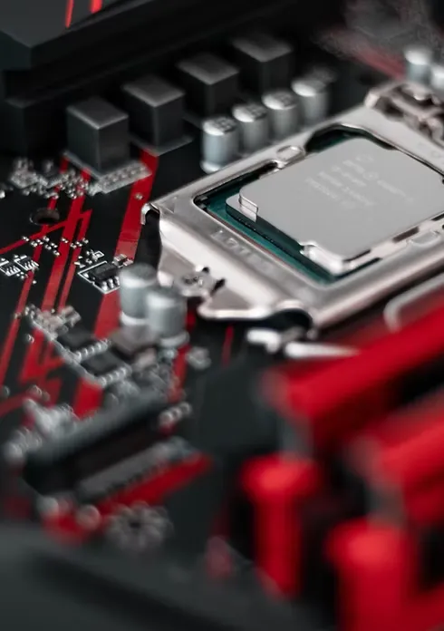

Assistência técnica
Cuidado especializado para seus equipamentos.
Recuperação, reparo e manutenção de equipamentos para você e sua empresa.

Como podemos ajudar
Serviços para a sua rotina.
Conheça os serviços oferecidos pela Microgate.
- Reparo especializado em Motherboards
- Reparo em Desktops e Notebooks (troca de teclado, tela, bateria, componentes internos)
- Conserto de Impressoras Laser
- Conserto de Tablets
- Conserto de Celulares
- Montagem e Limpeza de Computadores
- Instalação e configuração de novos computadores
- Instalação de acessórios e periféricos
- Analise e Upgrade de Hardware
- Formatação c/ Backup
- Otimização de espaço em disco
- Instalação de Programas
Conte com a Microgate
Solicite assistência técnica.
Fale com a Microgate sobre as necessidades da sua empresa.